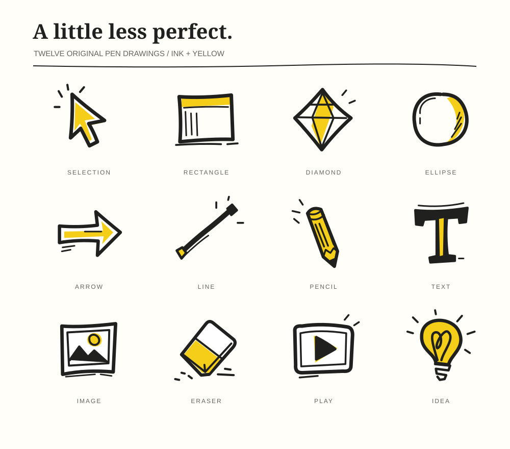

More pen. More personality.
Uneven contours, asymmetric shapes, fine interior marks and selective
yellow. Each icon is drawn with editable SVG paths. Compare the current
48px icon on the left with the new drawing at 48px and 100px.
Download the full SVG sheet

selection
BEFORE / AFTER / DETAIL
rectangle
BEFORE / AFTER / DETAIL
diamond
BEFORE / AFTER / DETAIL
ellipse
BEFORE / AFTER / DETAIL
arrow
BEFORE / AFTER / DETAIL
line
BEFORE / AFTER / DETAIL
pencil
BEFORE / AFTER / DETAIL
text
BEFORE / AFTER / DETAIL
image
BEFORE / AFTER / DETAIL
eraser
BEFORE / AFTER / DETAIL
play
BEFORE / AFTER / DETAIL
idea
New
BEFORE / AFTER / DETAIL